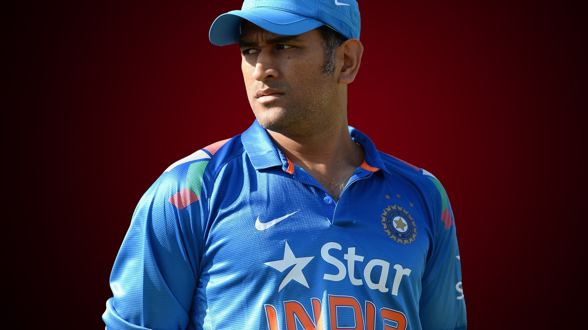

Full name Mahendra Singh Dhoni
Born 7 July 1981 (age 42)
Ranchi, Bihar (present-day Jharkhand), India
Nickname Mahi, Thala, MSD, Captain cool
Height 1.75[1] m (5 ft 9 in)
Batting Right-handed
Bowling Right-arm medium
Role Wicket-keeper-batter
Relations Sakshi Dhoni (wife)
Mahendra Singh Dhoni (/məˈheɪndrə ˈsɪŋ dhæˈnɪ/ (listen); born 7 July 1981) is an Indian professional cricketer.
He was captain of the Indian national team in limited-overs formats from 2007 to 2017 and in Test
cricket from 2008 to 2014. Dhoni is widely considered one of the greatest cricket captains, wicket-keeper-batsman
and finishers in the history of cricket.[a] He plays as a right-handed wicket-keeper-batsman and is known for his
calm captaincy and his ability to finish matches in tight situations. He is also the current captain of Chennai Super
Kings in the Indian Premier League.
Read More